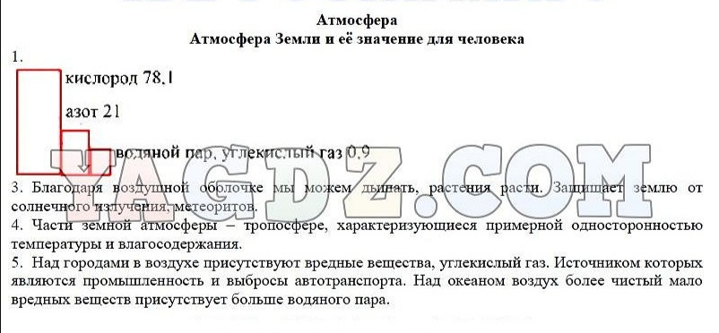
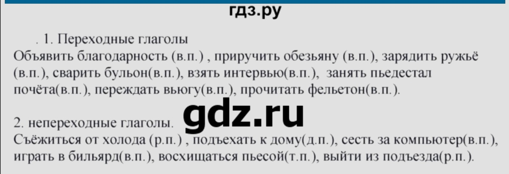

Домашние задания на 11 мая
География
параграф 27, р.т. стр.63-65 №1-5.
Ответы

Литература
пишем промежуточную аттестацию. Прочитать стр. 241-269.
Руский язык
упр 323, ученикам, получивших за словарный диктант 2 , предоставляется возможность выполнить дополнительное задание, прислать мне в дневник этим же файлом
доп задание
Ответы
